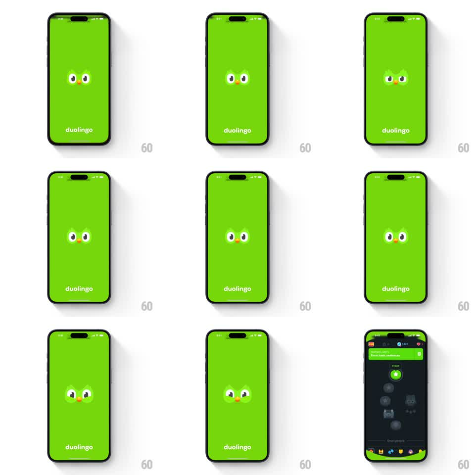

Media
Frame-by-frame

Rebuild this animation 1:1: Duolingo's app splash - brand-green screen with Duo's eyes and beak peeking at center above the wordmark, the eyes blink and dart, then the face zooms up to fill the screen and resolves into the learning-path dashboard.

Rebuild this animation 1:1: Duolingo's app splash - brand-green screen with Duo's eyes and beak peeking at center above the wordmark, the eyes blink and dart, then the face zooms up to fill the screen and resolves into the learning-path dashboard. ## Integration Integration: stack-agnostic spec - springs given as stiffness/damping, timed motions as duration + curve; map every value to your framework and animation library of choice. ## Scene Full-bleed Duolingo green (#58CC02) screen. Center: Duo's face cropped to eyes and beak. Bottom: white "duolingo" wordmark. Destination: the dark learning-path dashboard whose top unit header is the same green - the zoom hands the green off to it. ## Motion spec Pattern: blinking mascot splash with zoom-through transition. - Idle beat (~1s): the eyes blink once (lids close 120ms) and dart side to side (translateX +-6px pupils, 300ms, ease-in-out). - Zoom: the whole face scales from 1.0 to ~8x over 600ms with ease-in, centered between the eyes, until the green fills everything. - Hand-off: mid-zoom (when the green is full-bleed), crossfade to the dashboard's green unit header (200ms) - the header's green is the same value, so the wipe is invisible. - The dashboard content fades in below the header (opacity 0 to 1, 250ms) as the zoom settles. ## Calibration - The zoom accelerates (ease-in) - an eased-out zoom kills the "diving into the app" feel. - The two greens must match exactly; any mismatch exposes the cut. ## Reduced motion Splash holds 500ms, then a plain 200ms crossfade to the dashboard; no zoom. ## Don't miss - The face is cropped to eyes and beak only - no full owl on the splash. - The wordmark sits still through the blink beats and only leaves with the zoom.